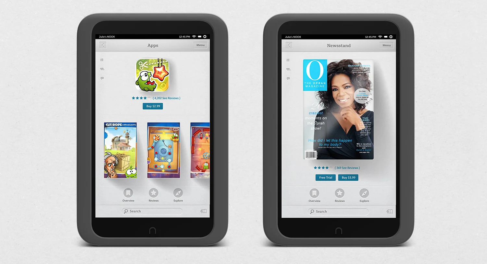
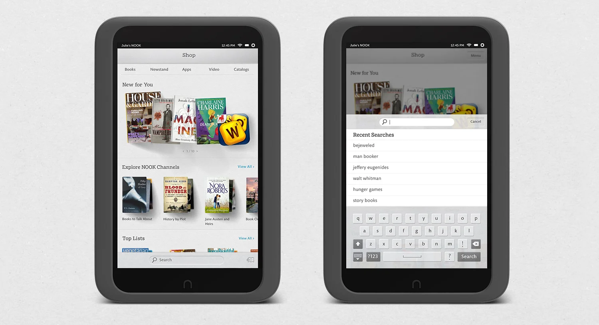
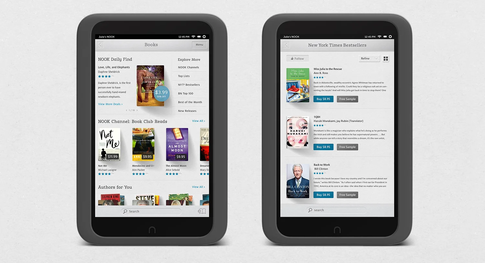

NOOK HD tablet OS
The Apps, Newstand, Shop, and Books storefronts for the NOOK HD tablet OS.
- Client
- Barnes & Noble / NOOK
- Role
- UX research, UI & interaction design

Apps and Newstand
The Apps storefront with a game purchase page, and the Newstand's magazine issue.

Shop and search
The Shop home with new releases, and a search screen with recent queries.

Books
The Books home with a daily find, and a New York Times bestseller list.
